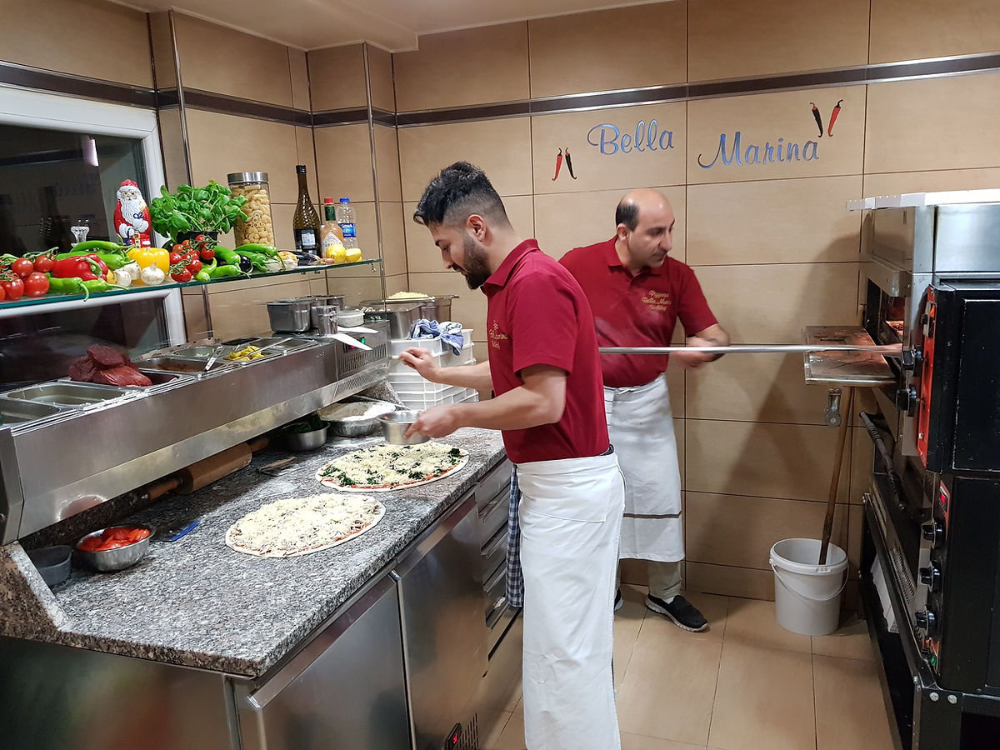

Unsere Geschichte
Original Steinofen Pizza · seit 1997
Pizzeria Bella Marina steht für ein einzigartiges Geschmackserlebnis der Extraklasse. Schnell und voller Hingabe zaubern wir Ihnen eine original italienische Pizza aus unserem Steinofen — von der klassischen Margherita bis hin zur ausgefallenen Eigenkreation.
Unsere mediterrane Küche zeichnet sich insbesondere durch Frische, Qualität sowie Liebe zum Detail aus. Pizzeria Bella Marina bietet Ihnen eine Auswahl an südländischen Speisen, die ausschließlich aus hochqualitativen Rohstoffen zubereitet werden.
Lassen Sie sich von den Spezialitäten unseres Hauses verwöhnen. Buon Appetito!

Seit 1997 in Walldorf
Familiengeführt, mit demselben Steinofen und derselben Leidenschaft wie am ersten Tag — Hauptstraße 31 ist seit fast drei Jahrzehnten ein fester Anlaufpunkt für Pizza-Liebhaber in Walldorf.
Speisekarte ansehen